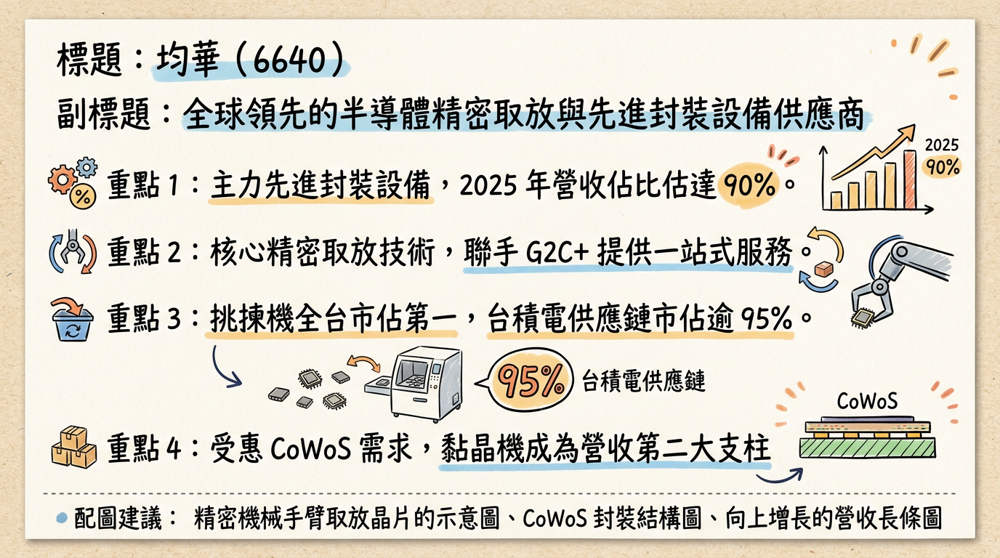
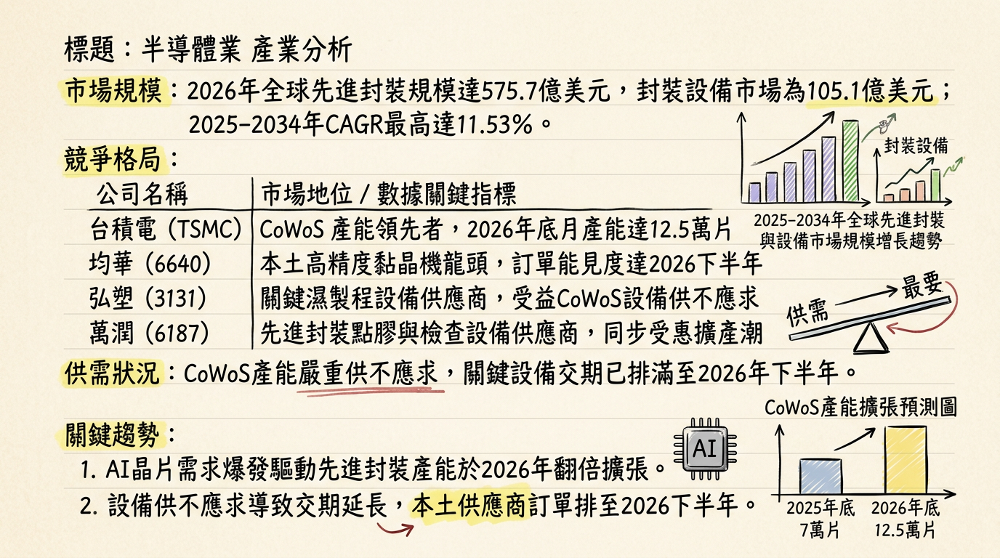
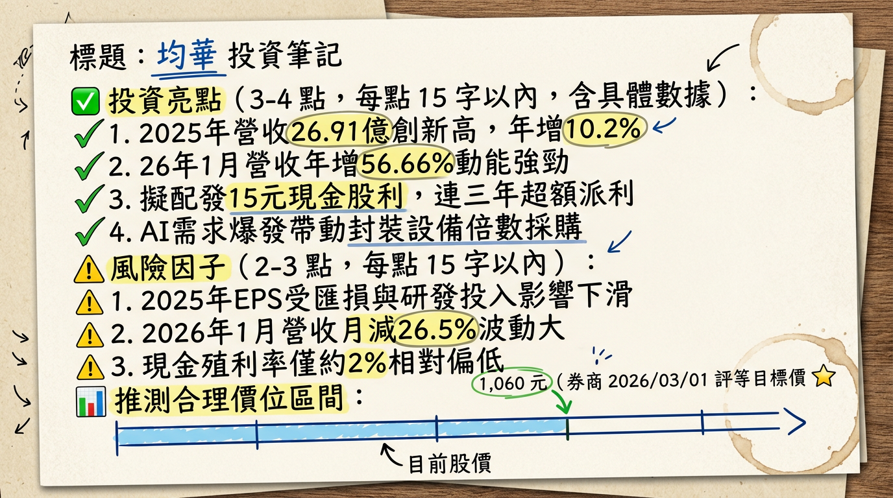

6640 均華 深度研究報告
一句話摘要
「先進封裝設備領航者，受惠 CoWoS 倍數增產需求，2026 年 EPS 有望挑戰翻倍成長至 26.5 元。」
公司概覽
均華精密（6640）為台灣半導體後段封裝設備領導廠商，隸屬於「G2C+ 聯盟」（均豪、志聖、均華）。其核心技術在於高精度取放（Pick and Place），並成功轉型為先進封裝設備供應商。
業務產品線與營收結構：
| 業務/產品線 | 2024 營收佔比 | 2025 營收佔比 | 2026 預估佔比 | 核心客戶 |
|---|
| 先進封裝設備 (Total) | 75% | 85% ~ 90% | >90% | 台積電、日月光 |
| - Chip Sorter (晶粒挑揀機) | -- | -- | 70% | 台積電 (市佔 >95%) |
| - Die Bonder (高精度黏晶機) | -- | -- | 20% | 台積電、封測龍頭 |
| - 維修與其他 | 25% | 10% ~ 15% | 10% | -- |
核心競爭優勢
市場統治力： 在台灣 Chip Sorter（晶粒挑揀機） 市場擁有絕對領先地位，於台積電先進封裝供應鏈市佔率超過 95%。
G2C+ 聯盟綜效： 透過與母公司均豪、志聖協作，解決產能瓶頸。2024-2025 年訂單激增時，成功運用均豪台中廠產能進行彈性組裝。
技術護城河： 具備研發 Hybrid Bonding（混合鍵合）與面板級封裝（FOPLP/CoPoS）能力，技術路徑與台積電 SoIC 及未來 3D 封裝趨勢高度契合。
結構性需求增長： AI 晶片尺寸變大（如 Blackwell 系列），導致單機產能 (UPH) 下降，客戶必須採購「倍數」機台以維持產出，帶動營收非線性成長。
財務分析
月營收趨勢表
| 月份 | 營收金額 (千元) | 月增率 MoM | 年增率 YoY | 備註 |
|---|
| 2026/01 | 230,696 | -26.5% | +56.7% | 歷年同期次高 |
| 2025/12 | 314,084 | +49.4% | +35.7% | -- |
| 2025/11 | 210,244 | +40.0% | -30.5% | 裝機進度調整 |
| 2025/10 | 150,192 | -43.6% | -52.4% | 基期較高 |
| 2025/09 | 266,377 | -32.4% | +94.9% | -- |
| 2025/08 | 394,121 | +109.4% | +133.1% | 營收歷史高點區域 |
年度趨勢預估
- 2024 (實際)： 營收 24.42 億元，EPS 14.62 元。
- 2025 (實際)： 營收 26.91 億元（年增 10.2%），EPS 12.75 元（因研發投入及業外收益基期較高導致獲利下滑）。
- 2026 (預估)： 法人預期營收挑戰雙位數新高，EPS 預估達 26.5 元（受惠於 AI 設備訂單爆發）。
法說會重點
- 產能展望： 目前在手訂單已排至 2026 年 Q3，先進封裝營收佔比已正式站穩 85% 以上。
- 新技術時程： 應用於 Apple 的 WMCM（晶圓級多晶片模組） 設備已於 2026 Q1 開始放量；新一代 Die Bonder 已通過認證，將貢獻 2026 下半年動能。
- 管理層發言： 針對 AI 晶片大型化趨勢，管理層指出「客戶必須倍數採購設備以維持產出」，此結構性變革為 2026 年主要成長引擎。
券商觀點
| 券商/來源 | 報告日期 | 評等 | 目標價 | 2026 EPS 預估 |
|---|
| 工商時報/法人 | 2026/03/01 | 買進 | 1,060 元 | 26.5 元 |
| MoneyDJ 法人 | 2026/03/04 | 正向 | 867 元 | 25.0 ~ 28.0 元 |
| 國泰投顧 | 2025/12/18 | 看多 | 694 元 | -- |
財報深度分析
利潤率趨勢表
| 季度 | 毛利率 (Gross Margin) | 營業利益率 (OPM) | 稅後淨利率 (NPM) | 單季 EPS |
|---|
| 2025 Q4 | 38.34% | 14.00% | 13.89% | 3.35 元 |
| 2025 Q3 | 40.06% | 14.87% | 11.13% | -- |
| 2025 Q2 | 38.59% | 17.71% | 11.72% | -- |
| 2025 Q1 | 39.15% | 12.32% | 9.81% | -- |
- 存貨分析： 2025 Q3 存貨週轉天數約 105.48 天，屬正常備料範圍，反映訂單能見度長。
- 資本支出： 2025 Q3 單季支出約 1,056 萬元，主要用於 AOI 檢測與新一代封裝技術研發。
股權異動與資本結構
股利政策： 2026/02/24 董事會決議 2025 年配發 15 元現金股利（超額配息），殖利率約 2%。
庫藏股： 於 2024/11 至 2025/01 執行 300 張庫藏股，用於轉讓員工以穩定留才。
留才計劃： 2026/02/24 決議發行「限制員工權利新股」，綁定核心研發人才。
產業分析
全球封裝設備競爭格局 (2025-2026 預估)
| 公司名稱 | 技術優勢 | 2025 毛利率 | 2026 展望 |
|---|
| 均華 (6640) | Sorters (市佔 95%) | 39.08% | 受惠 CoWoS 擴產，EPS 翻倍 |
| 弘塑 (3131) | 濕製程設備、底填膠 | 43.00% | 訂單已排至 2026 年底 |
| 萬潤 (6187) | 點膠機、AOI 檢測 | 42.00% | 深度綁定台積電先進封裝 |
| Besi (NL) | Hybrid Bonding | ~60.00% | 先進封裝設備全球龍頭 |
近期催化劑
* 台積電 AP7（嘉義）與 AP8（南科）新廠裝機需求。
* Apple WMCM 封裝訂單於 2026 Q1 正式放量。
* 2026 年 3 月券商集體調升目標價至千元以上。
* 地緣政治動盪影響台幣匯率與外資持股信心。
* 研發支出持續攀升，短期可能壓抑淨利率。
⭐ 成長動能時間軸
- 2026/Q1 底： Apple WMCM 設備開始大規模出貨，貢獻首波營收高峰。
- 2026/Q2： 台積電 CoWoS 產能由 7 萬片/月向 10 萬片邁進，均華挑揀機需求同步跳升。
- 2026/Q3： 完成 5 萬片 先進封裝新增產能建構需求；新一代 Die Bonder 通過驗證放量。
- 2026/Q4： 矽光子 (CPO) 與 面板級封裝 (CoPoS) 樣機認證進入收割期。
2026 展望
- 成長動能： AI 晶片面積變大與 3D 堆疊複雜化，帶動設備採購量由 1：1 轉向 1：2 或 1：3。加上 WMCM 新產品線加入，2026 年獲利增速預期將遠超營收增速。
- 風險： 台積電與日月光兩大客戶佔比過高（>80%），需警惕單一客戶資本支出下修風險。
投資結論
基本面極強： 均華在 Sorter 市場具壟斷地位，且 Die Bonder 獲認證後開闢第二成長曲線。
獲利翻倍預期： 2026 年預估 EPS 達 26.5 元，目前評價面雖處歷史高檔，但獲利成長具高度確定性。
配息大方： 15 元的高額配息顯示公司現金流穩健且對 2026 年展望極具信心。
建議： 具體目標價建議參考區間為 850 ~ 1,060 元，可於股價回檔至月線附近尋求布局機會。
本報告由 AI 自動產生，資料來源為公開網路資訊，僅供參考，不構成投資建議。產生時間：2026-03-05 12:06
📊 資訊卡


